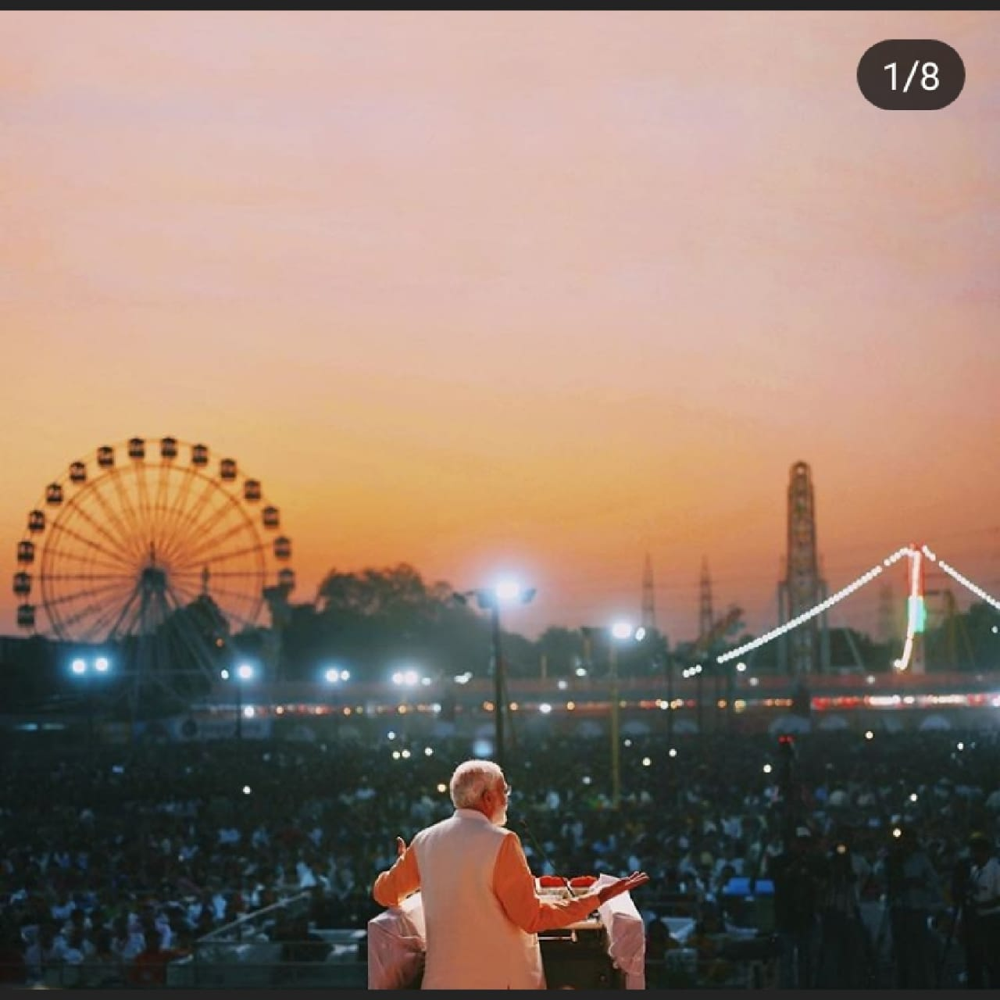
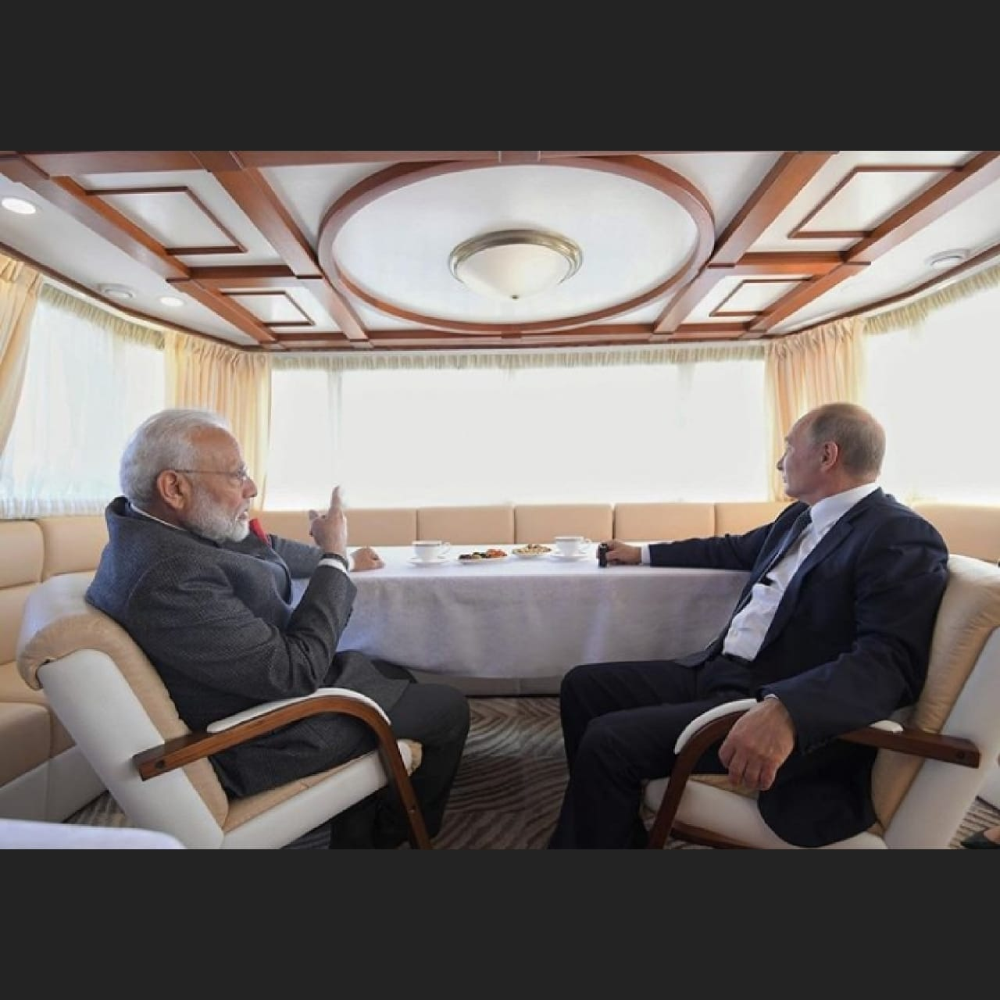

Prime Minister Narendra Modi in the land of the great Shivaji Maharaj,Satara in Maharashtra.
Prime Minister Narendra Modi in the land of the great Shivaji Maharaj,Satara in Maharashtra.
Prime Minister Narendra Modi in the land of the great Shivaji Maharaj,Satara in Maharashtra.
Narendra Modi working to keep India clean after his morning's plogging exercise at Mamallapuram.
 Narendra Modi attends the vibrant Vijaya Dashami programme in Delhi.
Modiji spends time with some of the brightest minds at IIT Madras convocation in Chennai.
 Narendra Modi address the United Nations General Assembly.
Narendra Modi address the United Nations General Assembly.
 Prime Minister received the Global Goalkeeper Award,conferred by the Gates Foundation.
Prime Minister received the Global Goalkeeper Award,conferred by the Gates Foundation.
 Prime Minister Narendra Modi with President Putin on the way to the Zvezda shipyard.